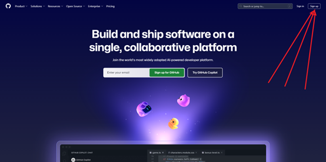
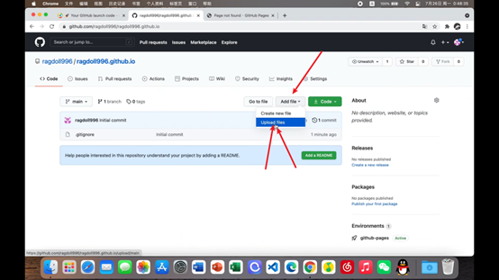

如何搭建不用服务器的个人网站呢？ 分类: 技术 | 发布于: 2025年4月21日 你好，我是MaxCaulfield。这期分享一下如何利用 GitHub Pages 免费搭建一个不需要额外购买服务器的个人网站。  点击右上角的 "Sign up" 开始注册。  选择上传文件。 总结 通过 GitHub Pages，我们可以非常方便地免费托管静态网站（由 HTML, CSS, JavaScript 文件组成）。这对于个人博客、项目展示页或简单的在线简历来说是一个绝佳的选择。后续你只需要更新仓库中的文件，GitHub Pages 会自动重新部署。